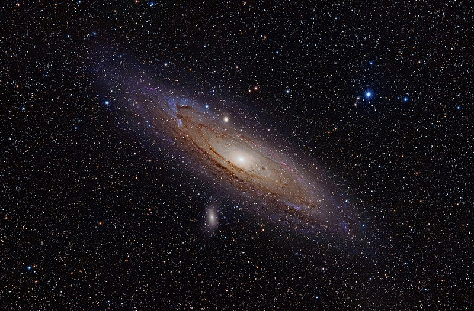
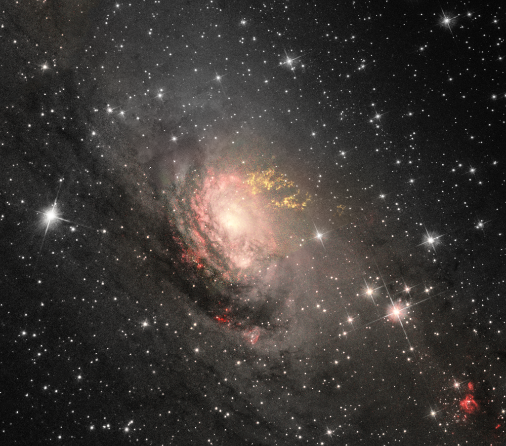

Galaxies list
|
Andromeda GalaxyThe Andromeda Galaxy, also known as Messier 31, M31 , or NGC 224 and originally the Andromeda Nebula, is a spiral galaxy approximately 780 kiloparsecs (2.5 million light-years) from Earth, and the nearest major galaxy to the Milky Way. The galaxy's name stems from the area of the Earth's sky in which it appears, the constellation of Andromeda. The virial mass of the Andromeda Galaxy is of the same order of magnitude as that of the Milky Way, at a trillion solar masses. The mass of either galaxy is difficult to estimate with any accuracy, but it was long thought that the Andromeda Galaxy is more massive than the Milky Way by a margin of some 25% to 50%. This has been called into question by a 2018 study which cited a lower estimate on the mass of the Andromeda Galaxy, combined with preliminary reports on a 2019 study estimating a higher mass of the Milky Way. The Andromeda Galaxy has a diameter of about 220,000 light-years, making it the largest member of the Local Group at least in terms of extension, if not mass. The number of stars contained in the Andromeda Galaxy is estimated at one trillion (1×1012), or roughly twice the number estimated for the Milky Way. The Milky Way and Andromeda galaxies are expected to collide in around 4.5 billion years, merging to form a giant elliptical galaxy or a large lenticular galaxy. With an apparent magnitude of 3.4, the Andromeda Galaxy is among the brightest of the Messier objects making it visible to the naked eye from Earth on moonless nights, even when viewed from areas with moderate light pollution. Andromeda Galaxy Antennae GalaxiesThe Antennae Galaxies are undergoing a galactic collision. Located in the NGC 4038 group with five other galaxies, these two galaxies are known as the Antennae Galaxies because the two long tails of stars, gas and dust ejected from the galaxies as a result of the collision resemble an insect's antennae. The nuclei of the two galaxies are joining to become one giant galaxy. Most galaxies probably undergo at least one significant collision in their lifetimes. This is likely the future of our Milky Way when it collides with the Andromeda Galaxy. Five supernovae have been discovered in NGC 4038: SN 1921A, SN 1974E, SN 2004GT, SN 2007sr and SN 2013dk. A recent study finds that these interacting galaxies are less remote from the Milky Way than previously thought—at 45 million light-years instead of 65 million light-years. They are located 0.25° north of 31 Crateris and 3.25° southwest of Gamma Corvi. The Antennae galaxies also contain a relatively young collection of massive globular clusters that were possibly formed as a result of the collision between the two galaxies. The young age of these clusters is in contrast to the average age of most known globular clusters, around 12 billion years old, with the formation of the globulars likely originating from shockwaves, generated by the collision of the galaxies, compressing large, massive molecular clouds. The densest regions of the collapsing and compressing clouds are believed to be the birthplace of the clusters. Antennae Galaxies Black Eye GalaxyThe Black Eye Galaxy (also called Evil Eye Galaxy and designated Messier 64, M64, or NGC 4826) is a relatively isolated spiral galaxy located 17 million light years away in the northern constellation of Coma Berenices. It was discovered by Edward Pigott in March 1779, and independently by Johann Elert Bode in April of the same year, as well as by Charles Messier in 1780. A dark band of absorbing dust in front of the galaxy's bright nucleus gave rise to its nicknames of the "Black Eye" or "Evil Eye" galaxy. M64 is well known among amateur astronomers because of its appearance in small telescopes. This galaxy is inclined 60° to the line-of-sight and has a position angle of 112°. At the distance of this galaxy, it has a linear scale of 65 ly (20 pc) per arcsecond. The morphological classification of NGC 4826 in the De Vaucouleurs system is (R)SA(rs)ab, where the '(R)' indicates an outer ring-like structure, 'SA' denotes a non-barred spiral, '(rs)' means a transitional inner ring/spiral structure, and 'ab' says the spiral arms are fairly tightly wound. Ann et al. (2015) gave it a class of SABa, suggesting a weakly-barred spiral galaxy with tightly wound arms. M64 is a type 2 Seyfert galaxy with an HII/LINER nucleus. The central region is a weak source of radio emission. A soft X-ray source has been detected at the nucleus, which is most likely coming from the circumnuclear region rather than directly from an active galactic nucleus. There is an inner disk of molecular gas that is truncated at a radius of 2,300 ly (700 pc). At present, the non-rotational motions of this disk do not significantly feed the core, but the disk does produce a vigorous rate of star formation. There is also evidence of a recent large inflow of mass. The interstellar medium of Messier 64 consists of two counter-rotating disks that are approximately equal in mass. The inner disk contains the prominent dust lanes of the galaxy. The stellar population of the galaxy exhibits no measurable counter-rotation. Possible formation scenarios include a merger with a gas-rich satellite galaxy in a retrograde orbit, or the continued accretion of gas clouds from the intergalactic medium. It has a diameter of 54,000 light-years (17 kpc). 
Black Eye Galaxy Bode's GalaxyMessier 81 (also known as NGC 3031 or Bode's Galaxy) is a spiral galaxy about 12 million light-years away, with a diameter of 90,000 light years, about half the size of the Milky Way, in the constellation Ursa Major. Due to its proximity to Earth, large size, and active galactic nucleus (which harbors a 70 million supermassive black hole), Messier 81 has been studied extensively by professional astronomers. The galaxy's large size and relatively high brightness also makes it a popular target for amateur astronomers. Bode's Galaxy Butterfly GalaxiesNGC 4567 and NGC 4568 (nicknamed the Siamese Twins or the Butterfly Galaxies) are a set of unbarred spiral galaxies about 60 million light-years away in the constellation Virgo. They were both discovered by William Herschel in 1784. They are part of the Virgo cluster of galaxies. Only one supernova (SN 2004cc) has been observed in the Siamese Twins. RGB image of the colliding galaxies NGC 4567 and NGC 4568. Data from the Liverpool Telescope on La Palma, processed by Göran Nilsson. These galaxies are in the process of colliding and merging with each other, as studies of their distributions of neutral and molecular hydrogen show, with the highest star formation activity in the part where they overlap. However the system is still in an early phase of interaction. They were named "Siamese Twins" because they appear to be connected. Butterfly Galaxies Cartwheel Galaxy
Cartwheel Galaxy Galaxia muito bonita, aconselho muito!! Galaxia muito bonita, aconselho muito!! 
Galaxia muito bonita, aconselho muito!! 
Galaxia muito bonita, aconselho muito!! 
Galaxia muito bonita, aconselho muito!! 
Galaxia muito bonita, aconselho muito!! Galaxia muito bonita, aconselho muito!! Bode's GalaxyGalaxia muito bonita, aconselho muito!! 
Bode's Galaxy Bode's GalaxyGalaxia muito bonita, aconselho muito!! 
Bode's Galaxy Bode's GalaxyGalaxia muito bonita, aconselho muito!! Bode's Galaxy Bode's GalaxyGalaxia muito bonita, aconselho muito!! Bode's Galaxy Bode's GalaxyGalaxia muito bonita, aconselho muito!! 
Bode's Galaxy Bode's GalaxyGalaxia muito bonita, aconselho muito!! 
Bode's Galaxy |